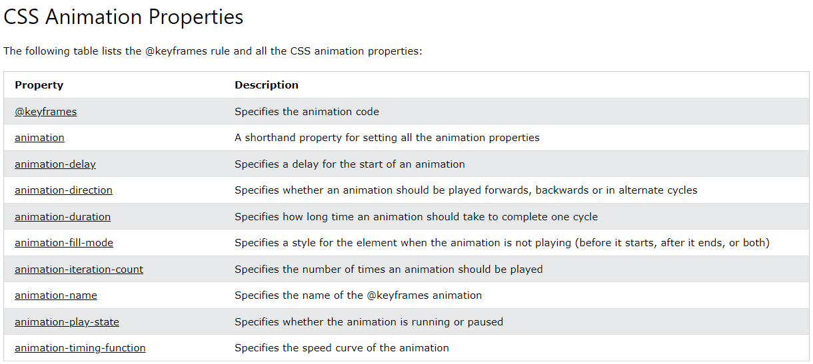

Podemos animar elementos sem usar JavaScript, somente com CSS!
Veremos as seguintes propriedades:
@keyframesanimation-nameanimation-durationanimation-delayanimation-iteration-countanimation-directionanimation-timing-functionanimation-fill-modeanimationUma animação permite que um elemento mude gradualmente de um estilo para outro. É possível alterar quantas propriedades do CSS desejar. Para usar uma animação, é preciso definir os "keyframes", que contém os estilos que o elemento terá nos diferentes períodos da animação.
Podemos usar a propriedade abreviada animation da seguinte forma:
div {
animation: example 5s linear 2s infinite alternate;
}
animation: name duration timing-function delay iteration-count direction;
@keyframesAo definir os estilos CSS na regra @keyframes, a animação gradualmente mudará do estilo atual para o novo estilo nos períodos determinados.
Para a animação funcionar, ela deve estar vinculada a um elemento.
Quando a animação termina, o elemento volta ao estilo inicial.
Observação: a propriedade animation-duration define quanto tempo uma animação demora para concluir. Se essa propriedade não for definida, a animação não acontece, porque o valor padrão é 0s (0 segundos).
O exemplo acima define a mudança de estilo com as palavras-chave from (que representa 0%, ou o início) e to (que representa 100%, ou o fim), mas também podemos usar porcentagens para adicionar vários estilos. O exemplo a seguir usa as porcentagens 0, 25%, 50%, 75% e 100%.
animation-delayEsta propriedade define um atraso para o início da animação.
Ao usar números negativos com esta propriedade, a animação é executada como se já tivesse começado.
animation-iteration-countEsta propriedade define quantas vezes a animação deve ser repetida. O exemplo a seguir se repetirá três vezes antes de parar.
Com o valor infinite, a animação se repete infinitamente.
animation-directionEsta propriedade define se a animação deve ser executada normalmente, em ordem inversa ou em ciclos alternados. Ela aceita os seguintes valores:
normal: a animação executa normalmente, este é o padrão.reverse: a animação executa em ordem inversa.alternate: a animação executa primeiro normalmente, depois em ordem inversa.alternate-reverse: a animação executa primeiro em ordem inversa, depois normalmente.Por exemplo:
animation-timing-functionEsta propriedade define a curva de velocidade da animação e aceita os mesmos valores que a propriedade transition-timing-function: ease, linear, ease-in, ease-out, ease-in-out e cubic-bezier(n,n,n,n). Consulte a propriedade transition-timing-function para saber mais.
animation-fill-modeAs animações do CSS não afetam um elemento antes do primeiro keyframe ser reproduzido ou após o último keyframe ser reproduzido. A propriedade animation-fill-mode pode substituir esse comportamento.
Esta propriedade define um estilo para o elemento alvo quando a animação não está sendo reproduzida (antes de começar, após terminar ou ambos). Ela aceita os seguintes valores:
none: é o valor padrão. A animação não aplica nenhum estilo ao elemento antes ou após a sua execução.forwards: o elemento mantém os valores de estilo definidos pelo último keyframe, dependendo das propriedades animation-direction e animation-iteration-count. backwards: o elemento fica com os valores de estilo definidos pelo primeiro keyframe, dependendo da propriedade animation-direction, e mantém isso durante o período definido em animation-delay.both: a animação segue ambas as regras de forwards e backwards, estendendo as propriedades da animação nos dois sentidos.